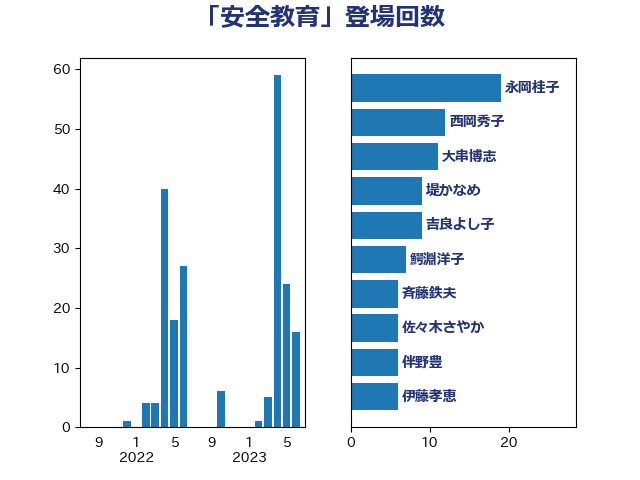

単語「安全教育」

| 永岡桂子 | 自由民主党 | 19 回 |
| 西岡秀子 | 国民民主党 | 12 回 |
| 大串博志 | 立憲民主党 | 11 回 |
| 堤かなめ | 立憲民主党 | 9 回 |
| 吉良よし子 | 日本共産党 | 9 回 |
| 鰐淵洋子 | 公明党 | 7 回 |
| 斉藤鉄夫 | 公明党 | 6 回 |
| 佐々木さやか | 公明党 | 6 回 |
| 伴野豊 | 立憲民主党 | 6 回 |
| 伊藤孝恵 | 国民民主党 | 6 回 |
| 末松信介 | 自由民主党 | 5 回 |
| 伊藤孝江 | 公明党 | 5 回 |
| 簗和生 | 自由民主党 | 3 回 |
| 礒崎哲史 | 国民民主党 | 3 回 |
| 石橋林太郎 | 自由民主党 | 3 回 |
| 小沢雅仁 | 立憲民主党 | 3 回 |
| 小倉將信 | 自由民主党 | 3 回 |
| 鎌田さゆり | 立憲民主党 | 2 回 |
| 森田俊和 | 立憲民主党 | 2 回 |
| 柳ヶ瀬裕文 | 日本維新の会 | 2 回 |
| 塩川鉄也 | 日本共産党 | 2 回 |
| 自見はなこ | 自由民主党 | 1 回 |
| 田村智子 | 日本共産党 | 1 回 |
| 浜口誠 | 国民民主党 | 1 回 |
| 河西宏一 | 公明党 | 1 回 |
| 沢田良 | 日本維新の会 | 1 回 |
| 森屋隆 | 立憲民主党 | 1 回 |
| 松野博一 | 自由民主党 | 1 回 |
| 広瀬めぐみ | 自由民主党 | 1 回 |
| 室井邦彦 | 日本維新の会 | 1 回 |
| 大島九州男 | れいわ新選組 | 1 回 |
| 城井崇 | 立憲民主党 | 1 回 |
| 嘉田由紀子 | 無所属 | 1 回 |
| 吉田とも代 | 日本維新の会 | 1 回 |
| 三浦信祐 | 公明党 | 1 回 |